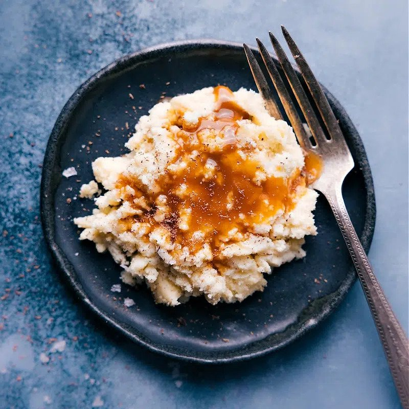

"Mashed Potatoes"

April Fools' Mashed Potatoes
Nothing beats Mashed Potatoes, but what about a dessert that looks like mashed potatoes?!
This is our favorite easy April Fools Prank Food!
Ingredients
- Vanilla cheesecake
- Caramel syrup
- Sea salt flakes
- Dark chocolate
Directions
- Remove the crust if needed and add the cheesecake to a plate.
- Mash down the cheesecake with a fork and/or spoon to resemble mashed potatoes.
- Right before serving, drizzle on caramel syrup and sprinkle with sea salt flakes.
- Use the fine holes of a cheese grater to grate a piece of dark chocolate to look like pepper.